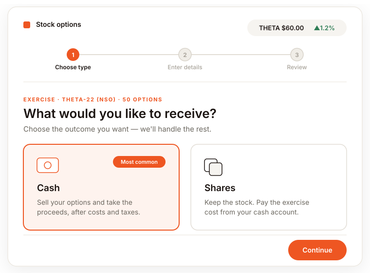
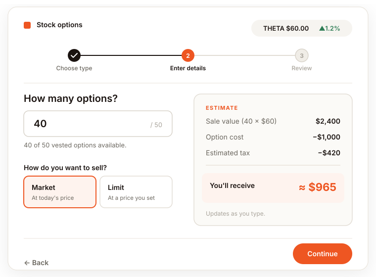
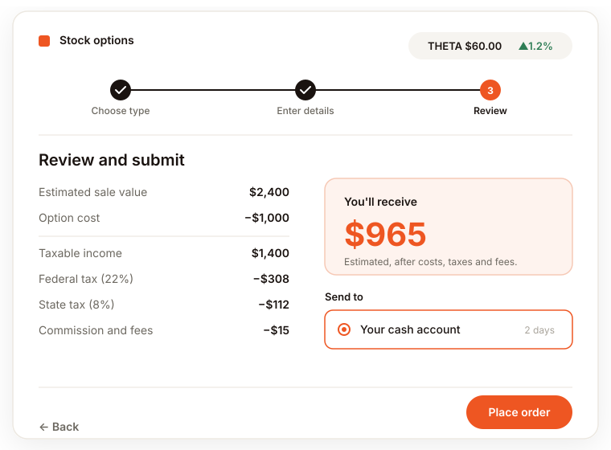

Being “factual” wasn't enough
SOP/SAR participants split into two camps. Novices, the majority, were frightened: they'd avoid exercising entirely for fear of an irreversible mistake, and the screens did nothing to reassure them. Experienced participants wanted to model tax outcomes and time the market, but the tools to do it were buried or disconnected.
Both hit the same walls: a calculator divorced from the transaction, tax shown as raw percentages with no “here's what you actually keep,” and language like Fair Market Value at Exercise Per Share where plain words would do.
What the research showed
I designed from a deep evidence base: a discovery study and two rounds of evaluative testing, 25 participants in all, that put the existing experience in front of real option-holders. The findings were unusually clear, and they pointed straight at the design.
- 01
Most people are novices who “learn by doing”
The experience had to guide them to an outcome, not assume fluency.
- 02
Tax was the number-one fear
A real deterrent to transacting at all. Every interviewee was unsure when tax applied; people wanted the impact on them, in net not gross, as early as possible. As one put it: “I don't want the technical detail; I just want an explanation of what it means to me.”
- 03
The calculator was the single most-valued feature
Named the best part of the experience by nearly every participant, because it let them “work in reverse”: enter the cash they wanted and see what it would take. Yet it sat buried mid-flow and was routinely skipped.
- 04
At the final step, people wouldn't press submit
Not because the flow was broken, but because they still couldn't answer the only question that mattered: how much do I actually walk away with?
“I'm still not sure how much cash I'm going to come away with.”
Understand before solving
With that base, we ran the classic four-week sprint: understand, explore, refine, prototype. Lightning talks from phone reps and analytics, a review of six competitor platforms, a “temperature check” against Fidelity's design principles, affinity mapping into How-Might-We statements, journey mapping, Crazy 8s, and solution sketches the team voted on.
I came in as co-facilitator and, when our facilitator rolled off, took it over as the lead designer who carried the chosen direction into detailed design and the FDS build.
Answer each failure directly
Almost every move maps to a documented finding. The flow now opens with a plain-language choice, cash or shares?, instead of Exercise & Sell vs Exercise & Hold, because research showed people arrive already knowing the outcome they want, and that “sell” is understood where “exercise” isn't.
The most-valued calculator was pulled to the front and wired into the transaction, so modelling an outcome carries its numbers straight through instead of forcing a re-entry. The review step makes proceeds legible, every tax line broken out, then a single highlighted you'll receive figure, so the question that stopped people from submitting is answered before they're asked to submit. And a clear three-step progress indicator replaced the “am I done?” ambiguity the research flagged on the old pending and confirmation screens.



Illustrative, sanitised, with dummy data.
From “here are the figures, good luck” to “here's what you'll receive, and here's what to do next.”
Lead with the user's goal, not the product's vocabulary
The strongest decision looked the smallest: making the very first question about the user's goal, not the product's vocabulary. Research showed most people already know whether they want cash or shares, so leading with that stripped the up-front cognitive load and let everything downstream tailor to the path they'd chosen.
The exercise types still exist; they just stopped being the price of entry.
Years of research, turned into a guided experience
I rebuilt the concept in FDS, Fidelity's current design system, so it shipped as real components ready for engineering rather than a one-off mockup, and handed off layouts and tooltip content to development.
Because every move answered a specific, documented failure, the redesign became the reference the wider SOP/SAR initiative built against, turning years of research into a guided experience a nervous first-timer could actually finish.